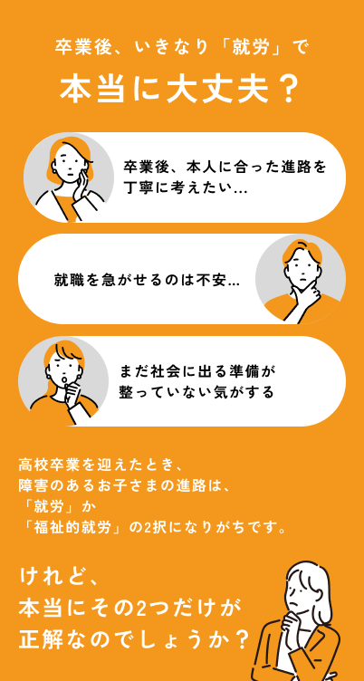
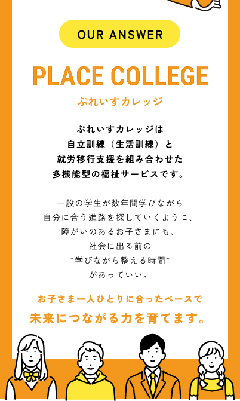

従来の福祉型カレッジとの
児童期から成人期まで、切れ目なく支援を見据えられる体制。
心理面とキャリア面を両輪で支える専門的サポート。
客観的なアセスメントを通して、進路を丁寧に検討。
一般就労以外も含めた現実的な進路設計。
一人ひとりの変化や成長に丁寧に向き合える環境。
ここでしか取り組めない
生活を整える力、人とかかわる力、自分を知る力。
社会で自分らしく生きていくための土台を育てます。
一人暮らし体験、金銭管理・一般教養など
SST・グループワーク・共同イベントなど
Excel/Word・AI活用・SNSリテラシーなど
企業見学・施設訪問・地域連携活動など
「自分にできる」を育てる独自プログラム
社会へ近づいていく
一人ひとりの成長を見据え、
段階的に社会へ近づいていく設計です。
ライフスキル・コミュニケ・
IT・教養・マインドセット
社会参加への準備期間
面接・履歴書・自己理解・
企業見学・実習・定着支援
就労OBO訓練・実習を併用
一般就労 / A型・B型 / サテライトオフィス
毎日が想像できる
営業時間は9:00〜15:00。
15:00〜16:00のアフタースクールにも対応しています。
1日のはじまり・健康チェック
生活訓練 / 学習プログラム
昼食提供あり
就労訓練 / 体験活動
振り返り・明日への目標
送迎あり
サークル活動・部活動など
ぷれいすカレッジは
これまで「Linoぷれいす」は
約10年、大阪北摂地域で
放課後等デイサービスを
運営してきました。
現場で培った支援の知識と
ノウハウのすべてを注ぎ込み、
ご家族の切実な声に向き合う中、
先の未来をつくる場所として
誕生したのが「ぷれいすカレッジ」です。
はい、可能です。保護者さまのみのご相談も歓迎しています。
もちろんです。進路を考えはじめた段階でのご相談も丁寧にお伺いします。
特別支援学校・高等学校を卒業予定、または卒業された方が対象です。
あります。ご自宅の場所に応じてご相談ください。
一般就労、就労継続支援A型・B型、サテライトオフィスでの就労などがあります。